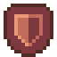
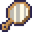

だんじょん・ばとるの攻略サイトです。
ゲーム本編はコチラ本作のプレイヤーキャラクター。己の技を磨くため、単身でだんじょんに潜る。
敵が立ちはだかる！ばとるで蹴散らせ！
ジェムパワーを授かれる。以下の3つから1つだけ選択。
謎の商人が経営するショップ。お金を払ってまほうやどうぐを購入できる。
ゲーム中では特に言及されていないデータたち。
Xはアイコン右側の数字を指す。
| アイコン | 効果 |
|---|---|
| Xターンの間行動不能。 | |
|
次のX回の攻撃（なぐる）の威力は2倍。 |
|
次のX回の攻撃（なぐる）の威力は2分の1。 |
|
Xターンの間、攻撃（なぐる）から受けるダメージを半分にする。 |
|
Xターンの間、まほうから受けるダメージを半分にする。 |
|
次のX回のまほうの威力は2倍。 |
| Xターンの間、最大HPの20%を回復。 | |
| Xターンの間、まほうを使用できない。 |
| 名前 | 画像 | 消費MP | 基礎ダメージ | Lvボーナス | 追加効果など |
|---|---|---|---|---|---|
| フレイム |  |
3 | 8 | ×2 | |
| パチパチ | 1 | 4 | ×0 | 90%の確率で敵に1を付与。 | |
| ビリビリ | 5 | 6 | ×1 | 70%の確率で敵に3を付与。 | |
| ジンクス | 5 | 50 | ×2 | 敵にorが付与されているとき |
|
| 5 | ×0 | それ以外 | |||
| サンサン | 3 | 3（固定） | ×0 | これで敵を倒すと闘士のLvが追加で1上昇する。 | |
| マネマネ | 3 | 所持金の50% | ×0 | 所持金が20%減少。 | |
| バースト | ALL | MP×6 | ×0 | MPを全て消費。 |
| 名前 | 画像 | 消費MP | 効果 |
|---|---|---|---|
| カイフク | 5 | 最大HPの50%を回復する。 | |
| リジェネ | 7 | 闘士に4を付与。 | |
| シールド |  | 3 | 闘士に5を付与。 |
| ムキムキ | 3 | 闘士に2を付与。 |
|
| ヘナヘナ | 2 | 敵に3を付与。 |
| 名前 | 画像 | 戦闘外での使用 | 効果 |
|---|---|---|---|
| くだもの | ○ | 最大HPの50%を回復する。HPが満タンの時に使うと最大HP＋6。 | |
| あおじる | ○ | MP＋5。 | |
| てかがみ |  | × | 闘士に1を付与。 |
| ばくだん |  |
× | 敵に25の固定ダメージを与える。 |
| さいころ | × | 覚えているまほうの内1つをランダムに発動する。MPは消費しない。 | |
| でんげん |  |
× | 敵に3を付与。 |
だんじょんに住まう敵の一覧。
ぷるぷる不定形生物。いちご味。
| ベトベト液 | 闘士に1を付与。 |
1/3の確率で使用。連続で使用しない。 |
| 攻撃 | 7ダメージを与える。 | 2/3の確率で使用。 |
小さなゴブリン。怒ると怖い。
| 攻撃 | 5ダメージを与える。 | 自身のHPが25%以上のときに使用。 |
| 怒りの一撃 | 15ダメージを与える。 | 自身のHPが25%未満のときに使用。 |
恥ずかしがり屋の液体生物。
趣味は砂糖を限界まで溶かすこと。
| 隠れる | 自身に3と3を付与。 |
自身のHPが減少したとき一度だけ使用。 |
| 攻撃 | 4-8ダメージを与える。 | 自身にが付与されていないときに使用。 |
| 攻撃 | 6-10ダメージを与える。 | 自身にが付与されているときに使用。 |
だんじょんで成長を続ける広葉樹。
種子はコーヒーの原料になる。
| 攻撃 | Xダメージを与える。 | X=行動回数 |
カタツムリに憧れるナメクジ。
理想の殻を求めて今日もうろつく。
| 攻撃 | 13ダメージを与える。 | |
| ネトネト攻撃 | 闘士に2を与える。 |
2ターン目に使用。 以降3ターンごとに使用。 |
だんじょんのまほうパワーから生まれた生き物。
ジェムが大好き。
| 攻撃 | 4-8ダメージを与える。 | |
| 回復 | 自身のHPを15回復する。 | 自身のHPが50%未満になったとき、3回まで使用。 |
硬い果実で根元を保護する植物。
ホコグサとの縄張り争いに勝利し、着実に生息域を拡大している。
| ぶつりシールド | 自身に2を付与。 |
奇数回目の行動で50%の確率で使用。 |
| まほうシールド | 自身に2を付与。 |
奇数回目の行動で50%の確率で使用。 |
| 攻撃 | 12ダメージを与える。 | 偶数回目の行動で使用。 |
ちょっと賢い不定形生物。すぐ魔力切れになる。
パイン味。
| チンモク | 闘士に3を付与。 | 1回目の行動で使用。 |
| カイフク | 自身のHPを45回復。 | 自身のHPが50%未満でカイフクを未使用のとき、一度だけ使用。 |
| カイフク（不発） | 何もしない | 自身のHPが50%未満でカイフクを使用済みのとき、一度だけ使用。 |
| 攻撃 | 8ダメージを与える。 |
故障のために捨てられた、かつての住民の生活必需品。
付喪神となって皆に八つ当たりしている。
| 攻撃 | 5ダメージを与える。 | 奇数回目の行動で使用。 |
| ヒートアタック | 12ダメージを与える。 | 6の倍数を除く偶数回目の行動で使用。 |
| 放電 | 7ダメージを与え、闘士に2を付与。 | 6の倍数回目の行動で使用。 |
自分こそだんじょん最強だと信じてやまないトカゲ。
HPが半分切ってから本気を出す。
| 引っ掻き攻撃 | 7ダメージを与える。 | 1回目の行動で使用。 ファイアブレスの次に使用。 |
| チャージ | 何もしない。 | 引っ掻き攻撃の次に使用。 覚醒の次に使用。 |
| ファイアブレス | 20ダメージを与える。 | チャージの次に使用。 |
| 覚醒 | 自身に99を付与。 |
自身のHPが50%未満になったとき一度だけ使用。 |
商人の弟子。一番弟子の座を賭けて闘士に戦いを挑んでくる。
夢はCDデビュー。
| 癒しの歌 | 闘士のHPを50%回復。闘士のMP+3。 | 1回目の行動時、闘士のHPが25%未満ならば使用。 |
| エール | 闘士に1を付与。 |
1回目の行動時、闘士のHPが25%以上ならば使用。 |
| シャイニング | 自身に3を付与。 | 4・9回目の行動で必ず使用。 |
| バラード | 闘士に1を付与。 | 1/4の確率で使用。 |
| ダンス | 8-14ダメージを与える。 | 上のいずれにも当てはまらないとき使用。 |
弱い者だけを狩る雑魚専の死神。
何度狩っても戻ってくる闘士を怪訝に思っている。
| 死のカウントダウン | 何もしない。 | 1-6回目の行動で使用。 |
| 死 | 999999ダメージを与える。 | 7回目以降の行動で使用。 |
格闘の達人にして闘士の師匠。
普段は雑貨カフェ経営で生計を立てている。
「特訓？何度でも付き合うよー」
| 攻撃 | 12-16ダメージを与える。 | |
| 護身（ぶつり） | 自身に4を付与。 |
自身のHPが50%未満になったとき、闘士のMPが10以下ならば使用。 |
| 護身（まほう） | 自身に4を付与。 |
自身のHPが50%未満になったとき、闘士のMPが11以上ならば使用。 |
| 復活 | 自身のHPを完全に回復する。 | 自身のHPが0になったとき使用。以降は復活後の行動パターンになる。 |
| 攻撃 | 26ダメージを与える。 | 復活後最初の行動で使用。 気合溜めの次に使用。 |
| まほう乱舞 | 自身に2を付与。 闘士に 1を付与。 |
攻撃の次に使用。 |
| 気合溜め | 自身に1を付与。 |
まほう乱舞の次に使用。 |
| 名前 | 画像 | 獲得方法 | 獲得のコツ |
|---|---|---|---|
| だんじょんクリア！ |  |
だんじょんを制覇する。 | |
| だんじょんの覇者 | 全ての敵を倒してだんじょんを制覇する。 | ||
| 格闘家 | 「なぐる」コマンドだけで敵を倒す。 | 1Fのスライムをひたすら殴り続けるのが楽。 | |
| マジシャン | 「まほう」コマンドだけで敵を倒す。 | 「ジンクス」「バースト」などの威力の高いまほうを活用しよう。 | |
| エナジー満タン | MPを30以上蓄積する。 | 戦闘で「まほう」を多用しない。ジェムの「ほきゅう」やアイテム「あおじる」を有効活用すべし。 | |
| 渾身の一撃！ | 1回の攻撃で100ダメージ以上与える。 | 「ジンクス」「バースト」「マネマネ」に「てかがみ」の効果を乗せよう。 | |
| 取るに足りぬ | HPを50%以上残してラスボスを撃破する。 | 強いまほうで速攻を仕掛けるか、「リジェネ」「シールド」等でHPを温存しよう。 | |
| どうぐマスター | 1回の攻略でどうぐを10個以上使用する。 | ジェムの「くらふと」やショップでどうぐを仕入れよう。 | |
| ちりも積もれば | Lv20に到達する。 | 「サンサン」必須。最低でも6体を「サンサン」で倒す必要がある。 | |
| 完売御礼！ |  |
ショップの品物を買い占める。 | 210円持ってショップに駆け込むと確実。3Fで狙おう。 |
| ラッキー！ | 「くらふと」1回でどうぐを2個手に入れる。 | 「くらふと」コマンド選択時、1/5の確率で達成可能。 | |
| ？？？ |  |
他の実績を全て集める。 |